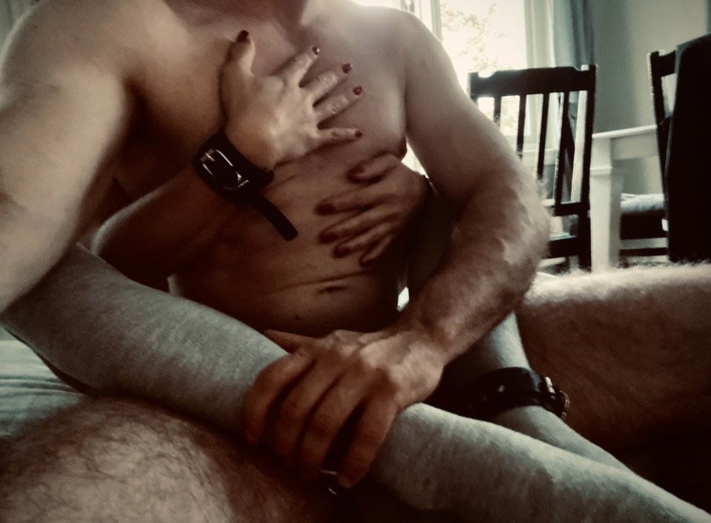

Du är där 15 minuter bort.
Men det kunde lika gärna vara ett helt liv.
Vi bor i parallella verkligheter, där mitt hjärta fortsätter slå i en värld du inte längre kliver in i.
Det är inte över.
Men det får inte heller leva.
Det är kärlek men utan ram.
Närvaro men utan plats.
Två kroppar i samma stad, två själar i olika dimensioner.
Tänker på hur du lever där borta, jobbar, tränar, skjutsar och bygger på huset.
Hur du varje morgon vaknar till samma soluppgång och somnar under samma måne.
Ser dig i precis allt som är – mintchoklad i affären, salta pinnar, promenader, vita bilar, välklädda män i kostym.
Hör skratt och tänker genast på vårt.
Ser par som omfamnar varandra efter åtskildhet på centralen och jag ser bara återförening – våran.
Det är ingen vanlig förlust.
Ingen död.
Kärleken försvann inte – den snarare blomstrade som aldrig förut.
Det är något som finns precis där och ändå inte får finnas med mig.
Du har inte lämnat.
Dörren är fortfarande på glänt.
Men du öppnade den inte helt – och inte för att du inte vill.
Det är som att hålla något så heligt i sina händer att man inte vågar röra det.
Som att backa av kärlek.
Som att vara lojal mot något som skaver, för att det är tryggare än att släppa taget.
Och du vet att du skulle rasa – men samtidigt märker du hur du inte fullt ut längre tillhör den verkligheten.
Hur dina lungor söker den där luften, det där utrymmet där de fick andas fritt.
På natten och när ingen ser.
Lever du där borta.
Saknar.
Minns.
Känner mig.
Det orimliga är att det mest levande jag någonsin känt nu ska leva tyst, osynligt, nära men utan plats.
